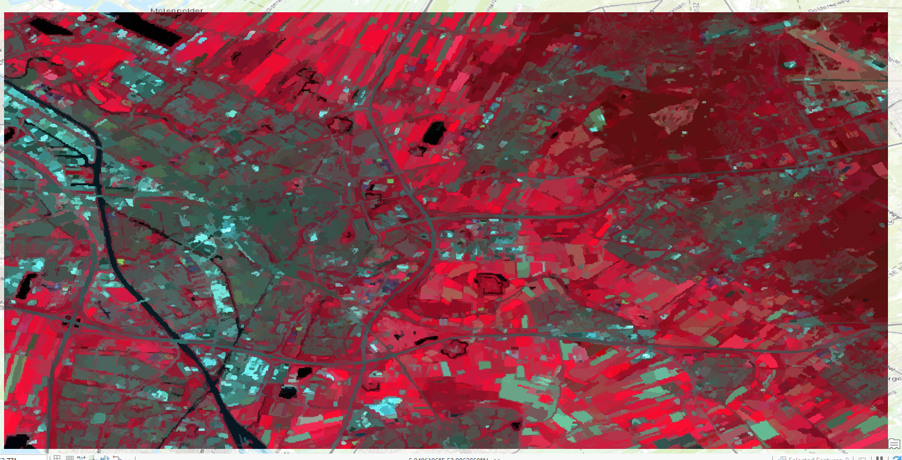

Project Overview
This assignment uses satellite imagery to classify the landscape into different surface-cover categories. For this version of the project, I chose an object-based unsupervised classification approach. Instead of manually defining every class from the start, the image is grouped into similar image objects based on spectral and spatial characteristics.
Final Classification Map

Object-based unsupervised classification map generated from satellite imagery.
The map shows the result of an object-based unsupervised classification. Areas with similar spectral and spatial properties are grouped together into land-cover classes. This allows broad surface patterns to be identified, such as vegetation, water, built-up areas, and other land-cover types, even when the exact class labels still require interpretation.
Brief Reflection
This classification is useful for quickly identifying major land-cover patterns in the satellite image. However, because the classification is unsupervised, the resulting classes need to be checked visually and interpreted carefully. Some categories may overlap or require further refinement before they can be treated as fully accurate land-cover classes.